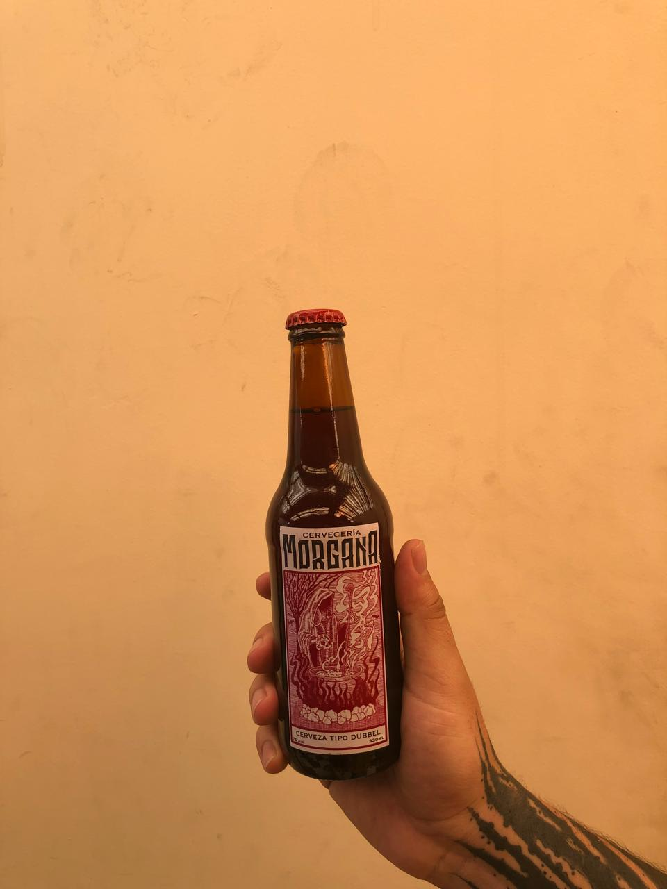

Encanto cervecero
Cerveza Dubbel: Roja

Dubbel es la denominación de una cerveza trapista belga...
Westmalle Dubbel fue imitada por otras cervecerías...
| ABU | IBU | VOL |
|---|---|---|
| 5% | 30 | 330 cm³ |
Cerveza IPA: Cerveza Lupulada
IPA es la denominacion para Indian Pale Ale, dado que se desarrollo para soportar el viaje de los britanicos a India ...
Es una de las cervezas mas famosas actualmente por su alto contenido de lupulo ue permite diferentes mezclas de sabores y aromas...
| ABU | IBU | VOL |
|---|---|---|
| 6% | 70 | 330 cm³ |
Cerveza Stout
Stout es un tipo de cerveza Irlandesa conocida por sus sabores achocolatados de la malta y dulzor...
Es una de las mas suaves en alcohol y al paladar...
| ABU | IBU | VOL |
|---|---|---|
| 4% | 10 | 330 cm³ |